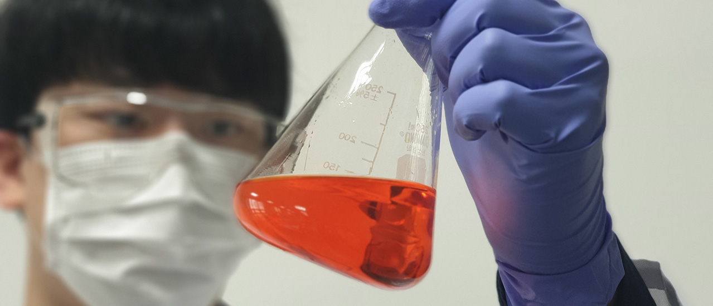

공정개발
공정개발
고객께서 요구하는 화학물질을 양산하기 위해서는 공정 개발이 필수입니다.
실험실 규모의 작은 사이즈 반응을 대규모 양산을 진행하기 위해서는 최적화된 공정개발을 진행해야 합니다.
저희 (주) CMDL은 다년간 숙련된 공정개발 인력을 바탕으로 고객이 요구하는 품질 수준에 최적화된 공정개발을 진행하고,
양산에 바로 적용 가능한 공정 개발 서비스를 진행하고 있습니다. 이러한 공정개발은 양산 전반에 적용되는 품질보증/관리 시스템까지를 포함하고 있습니다.